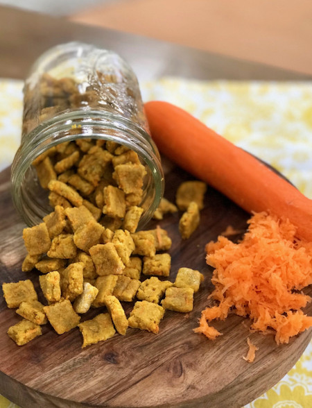

Carrot Cat Treats

Description
If your cat likes carrot for some reason, they'll probably like these treats.
Ingredients
- 2 tablespoons oil
- 1 1/4 cups flour
- 1 tablespoon dried catnip
- 3/4 cup shredded carrot
- 1 large egg, beaten
- Cold water as needed
Steps
- Preheat oven to 375 degrees F and line a baking sheet with parchment paper.
- In medium bowl add oil and mix in 1 cup of the flour until mixture looks sandy.
- Stir in catnip and carrots.
- Mix in egg. Add a little water if the mixture looks too dry and isn't holding together. Add a little flour if the mixture looks too wet and sticky. (Sometimes the carrots can be more wet or dry.)
- Sprinkle flat surface with a little additional flour and roll or pat out dough to ¼ inch thickness. Sprinkle dough with additional flour as needed.
- Prick dough all over with a fork. Use pizza wheel to cut dough into 1/2 inch squares.
- Arrange squares on prepared baking sheet. Bake for about 12 minutes or until starting to brown.